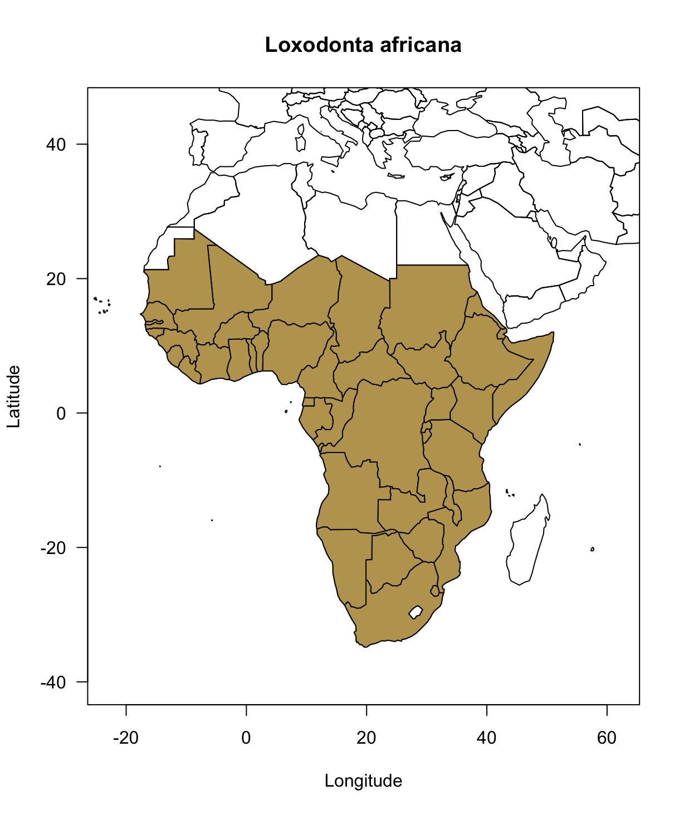

vignettes/citesr-vignette.Rmd
citesr-vignette.RmdTo set up a connection to the CITES Speciesplus database, an authentication token is required. To obtain such a token, the user must sign up on the Speciesplus API website. Below, we assume that the user already possesses a token. For iluastrative purposes we will use the generic token value 8QW6Qgh57sBG2k0gtt just as on the API documentation, but each user should obtain it’s own token to run the code below (see https://api.speciesplus.net/documentation for more details).
A token is actually mandatory as it should be passed to the header of all URL requests. They are three different ways to use the token in citesr:
set an environment variable SPPPLUS_TOKEN in .Renviron file (preferred);
use sppplus_login(), i.e. interactively set SPPPLUS_TOKEN up for the current R session (meaning a login will be needed the next session);
token argument of the functions, i.e. the token is passed manually to every function calls.To efficiently query information from the CITES Speciesplus database, the user first needs to retrieve the unique identifier of taxon concept considered (https://api.speciesplus.net/documentation/v1/taxon_concepts/index.html). To do so, the user should first call sppplus_taxon() and provide the scientific name of the taxon. Let us start by requesting the identifier of the African bush elephant, i.e. Loxodonta africana.
#devtools::install_github("ibartomeus/citesr")
library(citesr)
res1 <- sppplus_taxonconcept(query_taxon = "Loxodonta africana")
res1#> $all
#> id full_name author_year rank name_status
#> 1: 4521 Loxodonta africana (Blumenbach, 1797) SPECIES A
#> updated_at active cites_listing
#> 1: 2018-07-02T12:15:37.364Z TRUE I/II
#>
#> $synonyms
#> id full_name author_year rank
#> 1: 37069 Loxodonta cyclotis (Matschie, 1900) SPECIES
#>
#> $common_names
#> name language
#> 1: Olifant AF
#>
#> $higher_taxa
#> kingdom phylum class order family
#> 1: Animalia Chordata Mammalia Proboscidea ElephantidaeNote that if you chose options 3 regarding the connection:
res1 is a list of data.table object with different information pertaining to the naming of the taxon. If you however only need many details, setting appendix_only to TRUE will return the first data.table, all, for instance:
#> id full_name author_year rank name_status
#> 1: 4521 Loxodonta africana (Blumenbach, 1797) SPECIES A
#> updated_at active cites_listing
#> 1: 2018-07-02T12:15:37.364Z TRUE I/IIFor other taxon, there might be more than one identifier, in such a case the user should have a look at the active column.
#> id full_name author_year rank name_status
#> 1: 3210 Amazilia versicolor (Vieillot, 1818) SPECIES A
#> 2: 65789 Amazilia versicolor (Vieillot, 1818) SPECIES S
#> updated_at active cites_listing
#> 1: 2015-05-07T15:10:59.252Z TRUE II
#> 2: 2016-09-23T15:30:46.749Z FALSE NULLAlso, if the taxon is not listed a warning message should come up:
#> Warning in sppplus_taxonconcept(query = "Homo Sapiens"): Taxon not listed.For what follows we should keep in mind:
| name | identifier |
|---|---|
| Loxodonta africana | 4521 |
| Amazilia versicolor | 3210 |
Below we retrieve the distriution information of Loxodonta africana: taxon_distribution() and map it with the help of the rworldmap package:
par(las = 1)
suppressPackageStartupMessages(library(rworldmap))
map1 <- as.data.frame(taxon_distribution('4521'))
map2 <- joinCountryData2Map(map1, joinCode="ISO2", nameJoinColumn = "iso_code2", nameCountryColumn = "name")#> 42 codes from your data successfully matched countries in the map
#> 0 codes from your data failed to match with a country code in the map
#> 201 codes from the map weren't represented in your datamap2@data$iso2 <- unlist(lapply(map2$iso_code2, is.null))
plot(c(-23, 62), c(45, -40), type = "n", main = "Loxodonta africana",
xlab = "Longitude", ylab = "Latitude")
plot(map2, add = T)
plot(map2[!map2$iso2,], col = "#bda25d", add = T)
#> [1] 15#> [1] 3#> [1] "Dickinson, E.C. and Remsen, J.V. Jr (Eds). 2013.<i> The Howard and Moore complete checklist of the birds of the World</i>. 4th Edition, Vol. 1, Aves Press, Eastbourne, UK."
#> [2] "Dickinson, E.C. (ed.) 2003. The Howard & Moore Complete Checklist of the Birds of the World. 3rd Edition. Christopher Helm. London."
#> [3] "Meyer de Schauensee, R. 1982. A guide to the birds of South America. Academy of Natural Sciences. Philadelphia."Currenlty, there is no specific way to do so, the user should simply loop over a vector of species:
vc_sp <- c("Amazilia versicolor", "Loxodonta africana")
res <- lapply(vc_sp, function(x) sppplus_taxonconcept(query_taxon = x, appendix_only = TRUE))
do.call(rbind, res)#> id full_name author_year rank name_status
#> 1: 3210 Amazilia versicolor (Vieillot, 1818) SPECIES A
#> 2: 65789 Amazilia versicolor (Vieillot, 1818) SPECIES S
#> 3: 4521 Loxodonta africana (Blumenbach, 1797) SPECIES A
#> updated_at active cites_listing
#> 1: 2015-05-07T15:10:59.252Z TRUE II
#> 2: 2016-09-23T15:30:46.749Z FALSE NULL
#> 3: 2018-07-02T12:15:37.364Z TRUE I/IIor a vector of identifier:
vc_id <- c(4521, 3210)
res <- lapply(vc_id,
function(x) unlist(
taxon_eu_legislation(tax_id = x, type = "listings", simplify = TRUE)
)[1:6]
)
do.call(rbind, res)#> eu_listings.id1 eu_listings.id2 eu_listings.taxon_concept_id1
#> [1,] "27868" "27801" "4521"
#> [2,] "27900" "3210" "TRUE"
#> eu_listings.taxon_concept_id2 eu_listings.is_current1
#> [1,] "4521" "TRUE"
#> [2,] "B" "+"
#> eu_listings.is_current2
#> [1,] "TRUE"
#> [2,] "2017-02-04"